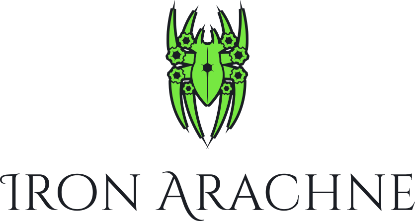
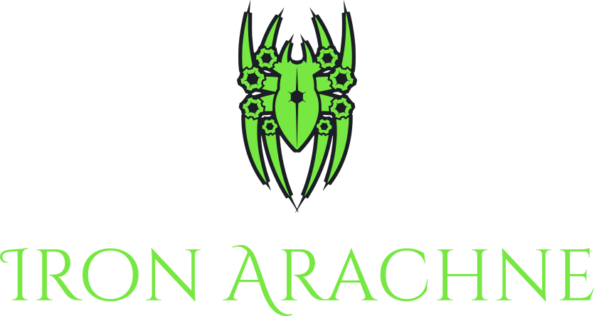
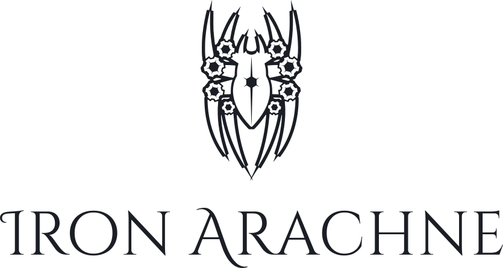
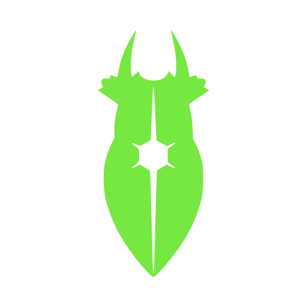
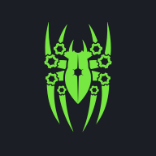

Iron Arachne — Brand Specimen
Every asset in this repository, rendered from the files in logo/, fonts/, and tokens/. Open it after any rebuild; if something here looks wrong, the artwork is wrong.
Rules and reasoning live in GUIDELINES.md and BRAND.md. This page only shows; it does not explain.
Primary lockups
lockup-horizontal.svg — default, light surfaces
lockup-horizontal-green.svg — dark surfaces
lockup-horizontal-mono.svg — one-colour print

lockup-stacked.svg

lockup-stacked-green.svg

lockup-stacked-mono.svg
Minimum sizes
Each asset at its documented floor. If the artwork does not resolve here, the floor is wrong.
Glyph
glyph-green.svg — the keyline carries the contrast on light
glyph-green.svg — on charcoal the keyline dissolves into the ground
glyph-black.svg
glyph-simple-black.svg — carapace and star only
Full glyph vs simplified glyph at icon sizes, on charcoal
The build switches to the simplified mark below 32 px. Both are shown at each size so the crossover can be judged by eye.

Wordmark
wordmark-black.svg — outlined, kerned from the font's GPOS table, with 0.02 em tracking. The I's flourish must be complete at the left edge.
wordmark-green.svg
Web icons
Generated by scripts/build-icons.py. All are flattened onto charcoal, shown here on white to prove they survive a light tab bar.

Colour
Contrast ratios from tokens/colors.json, WCAG 2.1. Text samples are set live in each colour so the numbers can be checked against the eye.
| Token | Hex | On white | On charcoal | Role |
|---|---|---|---|---|
--ia-green | #76e841 | Aa 1.57 | Aa 10.65 | Primary. Dark surfaces only for text. |
--ia-green-acid | #9eff5b | Aa 1.24 | Aa 13.44 | Hover, highlight on dark. |
--ia-charcoal | #1b1e24 | Aa 16.70 | — | The brand's black. Keyline colour. |
--ia-slate | #2a2f38 | Aa 13.44 | — | Raised dark surface. |
--ia-granite | #3c4350 | Aa 9.95 | — | Borders, muted text on light. |
Accents
Domain tints. Never applied to the mark. Several fail for text on one surface or the other; that is a known open question, not a specimen error.
| Token | Hex | On white | On charcoal | Domain |
|---|---|---|---|---|
--ia-gold | #c8a46e | Aa 2.34 | Aa 7.15 | fantasy, heraldry |
--ia-tan | #5c5031 | Aa 7.93 | Aa 2.10 | maps, parchment |
--ia-emerald | #2f6b4f | Aa 6.29 | Aa 2.65 | nature, wilderness |
--ia-crimson | #8b3a3a | Aa 7.60 | Aa 2.20 | combat, danger |
--ia-amethyst | #6c2dbd | Aa 7.64 | Aa 2.18 | magic, arcane |
--ia-cyan | #39d0ff | Aa 1.80 | Aa 9.25 | sci-fi, tech |
--ia-plasma-blue | #4286f4 | Aa 3.53 | Aa 4.73 | starships, systems |
--ia-magenta | #ff4fd6 | Aa 2.86 | Aa 5.84 | anomalies, exotica |
Typography
Settlement of Vaskereth
Weave Your Universe
Cinzel Decorative, display and tagline
300 — Generates a settlement with population, government, and notable buildings.
400 — Generates a settlement with population, government, and notable buildings.
500 — Generates a settlement with population, government, and notable buildings.
600 — Generates a settlement with population, government, and notable buildings.
700 — Generates a settlement with population, government, and notable buildings.
Italic — from the italic file, not a slanted roman.
Inclusive Sans, variable weight axis
Kel-Oryn IV
Weave Your Universe
Display in brand green on charcoal
Ilyria llyria 1lyria
O5-Vaan 05-Vaan
bdellium pqoq
Confusable glyphs: I / l / 1, O / 0, b / d / p / q must each be distinct at a glance